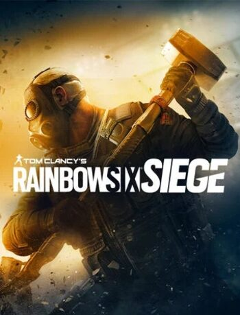

Rainbow Six Siege
Tom Clancy's Rainbow Six® Siege is an elite, tactical team-based shooter where superior planning and execution triumph.
FPS TacticalRating: ****
Online PvP
Singleplayer
Genre: Action
Ontwikkelaar: Ubisoft
Uitgavedatum: 1 dec, 2015

Systeemeisen
Besturingsysteem: Windows 8.1, Windows 10 (64bit versions required)
Processor: Intel Core i5-2500K @ 3.3 GHz or better or AMD FX-8120 @ 3.1 Ghz or better
Geheugen: 8 GB RAM
Grafische kaart: NVIDIA GeForce GTX 670 (or GTX 760 / GTX 960) or AMD Radeon HD 7970 (or R9 280x [2GB VRAM] / R9 380 / Fury X)
Direct X: DirectX® 9.0c compatible sound card 5.1 with latest drivers
Opslagruimte: 47GB
Recencies
IGN: "Rainbow Six Siege has grown into a much deeper competitive FPS that still rewards smart play as much as good aim."
Gamespot: "The regular shift between slow-and-steady and heart-pounding immediacy is exhilarating, especially when just a few seconds can change the momentum of a match."